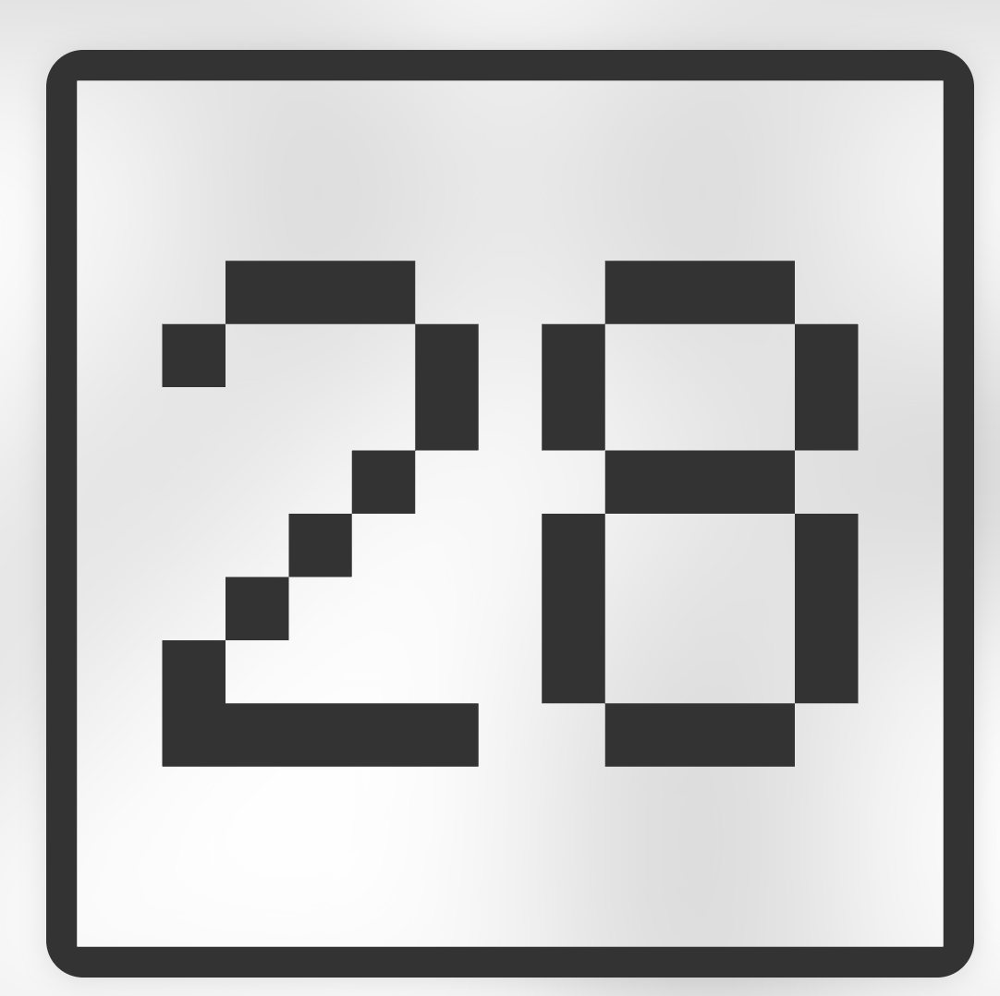

高一智
班導網站
成績查詢系統
學習歷程檔案雲端
校務系統
〈
1/4
〉
班導網站
成績查詢系統
學習歷程檔案雲端
校務系統
公告內容
日期
標題
內容
2025/10/18
本土問答
一、辛棄疾一生想要收復山河，但無數次抱負無法施展。你曾努力過卻沒被肯定，那種失落你是怎麼消化的？你會選擇放棄，還是換一種方式繼續前行？是什麼能讓你在無力感裡，仍然告訴自己「我還想再試一次」？ 為什麼？(請舉出個人的實際例子) 二、元宵燈火萬家歡樂，卻有一個人靜靜站在角落。你是否也曾在眾人歡笑時，在熱鬧的人群中，感到格格不入？感到孤單？那一刻你怎麼看待自己？你選擇迎合，還是選擇堅持做自己？，當大家都在追逐某種潮流時，你是否曾選擇一條與眾不同卻忠於自己的路？為什麼？(請舉出個人的實際例子) 三、蔣捷說「少年聽雨歌樓上，壯年聽雨客舟中，而今聽雨僧廬下」，人生階段不同，心情也不同。請舉出這兩三年當中，面對親情、友情、感情、課業、人生、生涯規劃等等，隨著年齡增長而有過不同的領悟與體會
2025/09/27
本學期行事曆
查看行事曆
學習資源
科目
資源連結
英文
授與動詞（授予動詞）是什麼？有哪些？（含例句）＿英文庫
英文「感官動詞」有哪些？來搞懂 hear、feel、see 等用法！＿英文庫
國中英語 - 使役動詞＿翰林雲端學院
find,leave,keep +O+OC 以豐富例句用法大解密|寫作必備！＿高效英語速學網
感官動詞有哪些？一個口訣馬上學會感官動詞＿日光英文
連綴動詞有哪些？常見連綴動詞的用法解析＿barshai
English4U 博客 1240 篇章
As Soon As / Upon 解析
TOEIC Past Perfect 對比講解
English4U 博客 501 篇章
NativeCamp 英語學習文章
副詞字尾 -ly 教學（清大）
raise、rise、arise、arouse 差別（VoiceTube）
English4U 教學文章（361）
Cubelish：take on 用法
English4U 教學文章（346）
English4U 英文學習網誌 (ID 126)
English4U 英文學習網誌 (ID 333)
English4U 英文學習網誌 (ID 899)
Engoo 英文寫作秘訣：used to / be used to 文法教學
Ivy Bar 常春藤文章 (No. 613)
English4U 英文學習網誌 (ID 227)
New Year Resolution（Engoo Blog 主題類）
Grammar: Reason & Result（Engoo Blog 英文寫作祕訣）
【學英文】Former vs Latter 前者後者2者有別
【文法懶人包】while 當連接詞的 3 種常見用法
探究實作
實驗報告格式（下載）